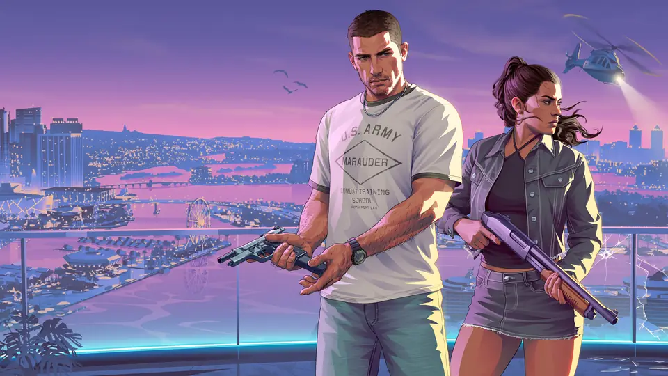

Ce qu'il te faut pour GTA 6 : stockage, manette, casque (guide d'achat)

En bref : pour GTA 6, il te faut une PS5 ou une Xbox Series, et de la place sur le disque. Le reste est du confort : une deuxième manette pour ne jamais tomber en panne de batterie, un casque pour la musique et les dialogues. Pas besoin de racheter de console : le jeu tourne sur les modèles de base.
Transparence : les boutons roses sont des liens affiliés Amazon. Si tu achètes, on touche une petite commission, sans changer ton prix. C'est ce qui finance le site. On ne recommande que ce qui sert vraiment pour GTA 6.
1. Le stockage : seulement si ta console est pleine
Sur PS5, tu peux ajouter un SSD dans la console. PlayStation exige un SSD M.2 NVMe PCIe Gen4, et recommande un modèle avec dissipateur. Un disque USB externe sert à stocker les anciens jeux, pas à jouer aux jeux PS5.
SSD PS5 compatibles (1 To) · lien affilié SSD PS5 compatibles (2 To) · lien affilié
Sur Xbox Series X|S, un disque USB ne permet pas de lancer les jeux Series : il faut une carte d'extension de stockage officielle, qui se branche à l'arrière.
Cartes d'extension Xbox Series · lien affilié
Notre conseil : avant d'acheter, regarde la taille annoncée dans ta boutique et supprime les jeux que tu as finis. Souvent, ça suffit.
2. Une deuxième manette
GTA 6 se joue en longues sessions. Avec deux manettes, une charge pendant que tu joues avec l'autre.
Manettes PS5 DualSense · lien affilié Manettes Xbox sans fil · lien affilié Stations de charge · lien affilié
3. Un casque
La radio et les dialogues comptent beaucoup dans un GTA. Un casque filaire basique suffit sur les deux consoles (prise jack sur la manette).
Casques gaming compatibles PS5 et Xbox · lien affilié
4. Le jeu
Standard (79,99 €) ou Ultimate (99,99 €) : on a comparé les deux dans Standard ou Ultimate : laquelle prendre ?.
GTA 6 sur PS5 · lien affilié GTA 6 sur Xbox Series · lien affilié
Ce qui est inutile
- Une PS5 Pro ou une nouvelle console si tu as déjà une PS5 ou une Xbox Series : le jeu est fait pour les modèles de base.
- Un disque dur USB pour jouer : il ne lance pas les jeux PS5 ni les jeux Xbox Series.
- Les manettes « pro » hors de prix : agréables, pas nécessaires pour un jeu solo.
Prochaine étape : la checklist du jour J.
Questions fréquentes
Faut-il un SSD pour jouer à GTA 6 ?
Non, le stockage intégré de la console suffit si tu as la place. Un SSD sert seulement si ta console est pleine.
Quel SSD acheter pour GTA 6 sur PS5 ?
Un SSD M.2 NVMe PCIe Gen4, idéalement avec dissipateur, conforme aux exigences publiées par PlayStation.
Peut-on jouer à GTA 6 depuis un disque dur USB sur Xbox Series ?
Non. Un disque USB permet de stocker les jeux Xbox Series, pas de les lancer. Pour jouer, il faut le stockage interne ou une carte d'extension officielle.
Les liens de cette page sont-ils sponsorisés ?
Ce sont des liens affiliés Amazon : on touche une petite commission si tu achètes, sans changer ton prix. Aucune marque ne nous paie pour être citée.
Sources
- PlayStation : ajouter un SSD M.2 à une PS5
- Xbox Wire : les options de stockage des Xbox Series X et S
- Seagate : utiliser un disque USB externe avec une Xbox Series
À lire aussi
Date, heure de sortie, prix et plateformes
GTA 6 sort le 19 novembre 2026 sur PS5 et Xbox Series X|S. Heure de sortie en France, Belgique, Suisse et Québec, prix des éditions, préchargement.
Standard ou Ultimate : laquelle prendre ?
Tout le contenu de l'édition Ultimate de GTA 6 (79,99 € contre 99,99 €) : voitures, armes, boutiques exclusives, mission spéciale. Notre avis pour choisir.
Bonus de précommande : Vintage Vice City Pack
Le Vintage Vice City Pack, bonus de précommande de GTA 6 : Vapid Stanier ’55 et son garage, tenues années 80 de Jason et Lucia, motif d'arme. Qui l'obtient et comment.
Tous les personnages de GTA 6
Qui sont Jason Duval et Lucia Caminos, les héros de GTA 6 ? Et Cal, Boobie, Dre'Quan, Real Dimez, Raul, Brian ? Les 8 personnages officiels expliqués, sans spoiler.